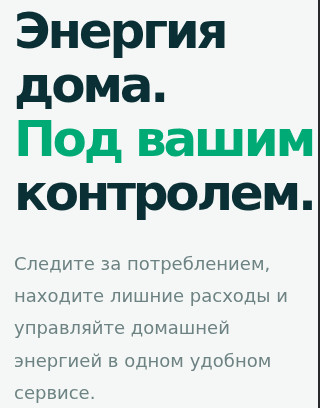
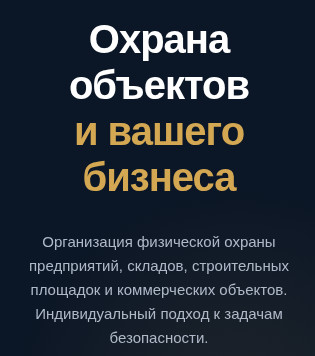
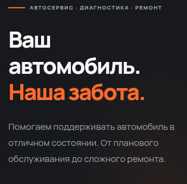
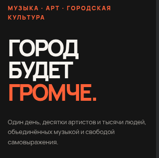

💻
Разработка сайтов
Сайты-визитки, лендинги и небольшие корпоративные сайты. Адаптивный дизайн, понятная структура и удобство для посетителей.
Помогаю бизнесу выглядеть профессионально в интернете, привлекать клиентов и автоматизировать повседневные задачи с помощью удобных цифровых инструментов.
Разрабатываю решения под конкретные цели и задачи бизнеса.
Сайты-визитки, лендинги и небольшие корпоративные сайты. Адаптивный дизайн, понятная структура и удобство для посетителей.
Боты для заявок, ответов на частые вопросы, уведомлений и автоматизации общения с клиентами.
Примеры моих работ: адаптивные сайты, лендинги и цифровые решения для бизнеса.

🌿 EcoFlow — адаптивный лендинг экосервисаEcoFlow — демонстрационный проект современного адаптивного лендинга для технологичного экосервиса. Сайт представляет концепцию цифрового сервиса, который помогает пользователям рационально расходовать ресурсы, управлять энергопотреблением и экономить. Проект разработан с использованием HTML, CSS и JavaScript без сторонних UI-фреймворков.
Подробности можно прочитать в README.md
Сайт - лендинг "Охрана-Центр"Адаптивный сайт-лендинг
Для организация физической охраны предприятий, складов, строительных площадок и коммерческих объектов. Индивидуальный подход к задачам безопасности.
Посмотреть проект можно здесь.

Сайт - лендинг "АвтоПрофи"Адаптивный сайт-лендинг
Для организации записи на ремонт автомобиля, с возможностью выбора услуг и времени их реализации.
Ссылка на проект.
Подробнее можно почитать в README.md

Сайт - лендинг "Музыкальный фестиваль"Адаптивный сайт-лендинг
Для организации музыкального фестиваля с расписанием выступлений и продажи билетов, в трех вариантах цен.
Ссылка на проект.
Подробнее можно почитать в README.md
Меня зовут Герман Ермаков. Я занимаюсь разработкой сайтов и Telegram-ботов, которые помогают решать практические задачи бизнеса.
В работе делаю акцент на понятном интерфейсе, аккуратной реализации и удобстве использования. Моя цель — создавать решения, которые действительно полезны клиентам.
Есть идея для сайта или Telegram-бота? Напиши мне — обсудим задачу и возможное решение.